UQ Cyber and AUSCERT to host the International Cybersecurity Challenge
The 2026 International Cybersecurity Challenge will be held on the Gold Coast from 18–21 May, bringing global cyber talent to Australia.
Event page →Research across deepfake detection, multimodal misinformation, audio forensics, and AI security.
Led by Dr Priyanka Singh, Senior Lecturer in Cyber Security at The University of Queensland, the group works across cyber security, digital forensics, privacy and security, homomorphic encryption, cloud computing and AI-enabled content authentication.
Our core problem is urgent: synthetic and manipulated media is becoming easier to generate, harder to detect and more persuasive when paired with misleading captions or narratives. The lab studies the full chain from manipulation and propagation to detection, explanation, provenance and trustworthy user-facing verification.
We focus on systems that can survive real deployment: robust models, auditable evidence, privacy-aware workflows and outputs that people outside a benchmark setting can understand.
Recent public commentary, cyber security engagement and lab updates.
The 2026 International Cybersecurity Challenge will be held on the Gold Coast from 18–21 May, bringing global cyber talent to Australia.
Event page →Dr Singh discussed the global Canvas breach affecting education institutions and the importance of calm, evidence-based public cyber security communication.
ABC News quoted Dr Singh on the rise of AI-generated fake digital IDs and the risks created when synthetic identity documents become easy to produce.
Read ABC story →UQ Contact asked Dr Singh to explain deepfake risks and practical verification cues for public audiences in the Sora 2 era.
Read guide →UQ Contact featured Dr Singh in a plain-language explainer on cookies, tracking, login persistence and online privacy.
Read story →Six active research directions across multimedia forensics, network security, audio deepfake detection and AI safety. Select a card to view figures and context from the underlying papers.
Manipulation is increasingly a communication problem, not just a pixel-level artefact problem. Persuasive posts can pair a real image with a misleading caption, a generated image with a true caption, or a coordinated package of image, text and external context. Our work treats detection as a region-aware and evidence-aware reasoning task.
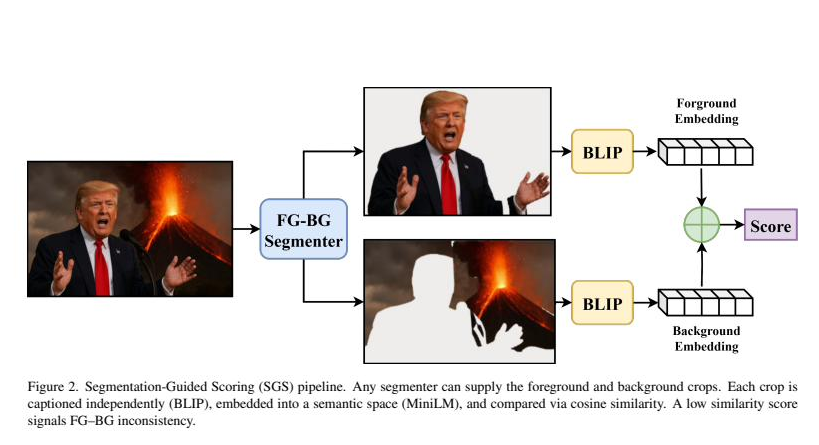
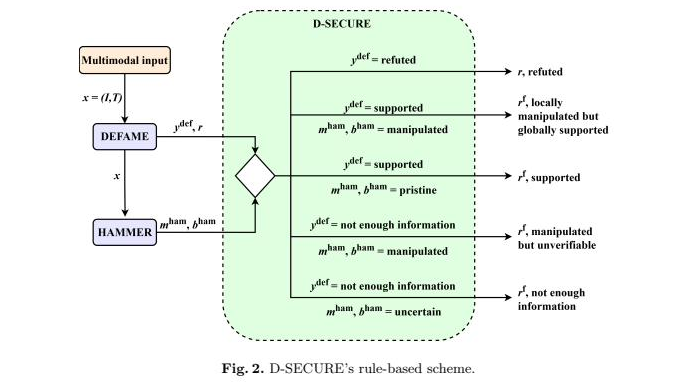
DF-P2E reframes deepfake detection as an explanation pipeline. Instead of stopping at a confidence score, it combines a classifier, Grad-CAM-style visual evidence, image-to-text captioning and LLM-based narrative refinement so users can inspect the reasons behind a verdict and ask follow-up questions about it.
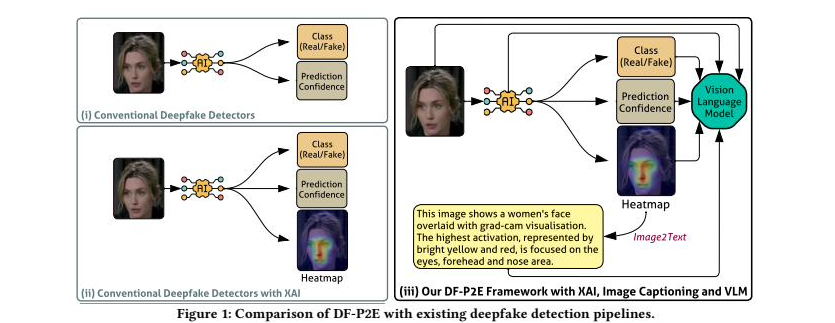
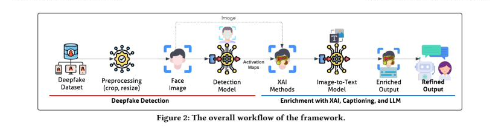
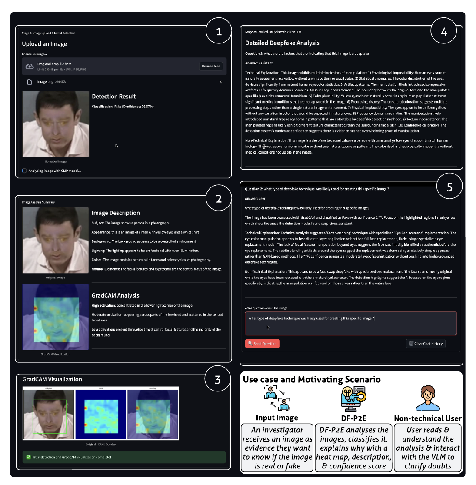
Audio deepfake detectors trained on one dataset routinely fail on another because of differences in recording conditions, codecs and synthesis methods. We study lightweight, interpretable pipelines that adapt detectors across domains without target-domain labels.
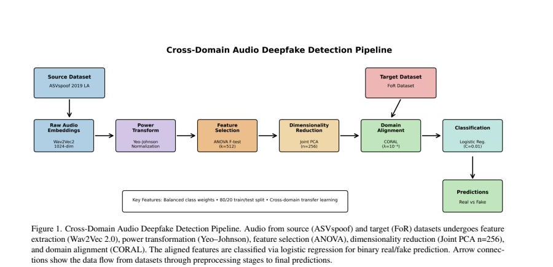
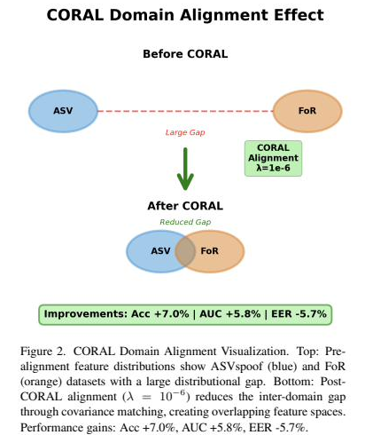
Network intrusion detection systems often deliver near-perfect benchmark numbers but offer little for the analyst on the other end of an alert. eX-NIDS adds an LLM-based explanation layer that turns flagged NetFlows into human-readable justifications, augmented with cyber threat intelligence and protocol context.
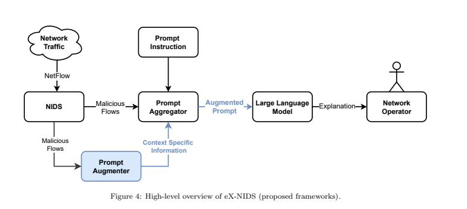
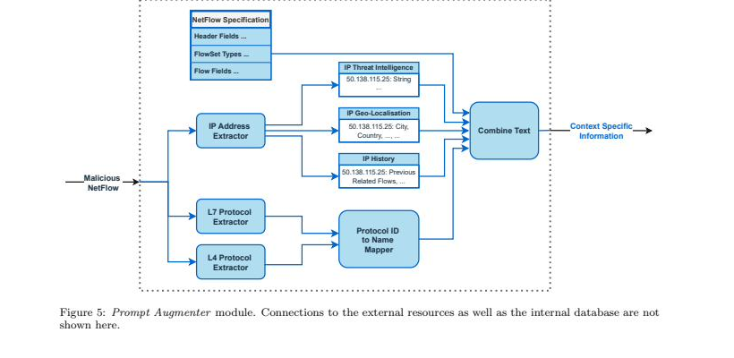
Two complementary directions: controlling LLM behaviour at the activation level for trustworthy generation, and studying how non-experts can already turn off-the-shelf chatbots into phishing tools. Both inform how cyber teams should reason about LLMs as both a defence surface and an attack surface.
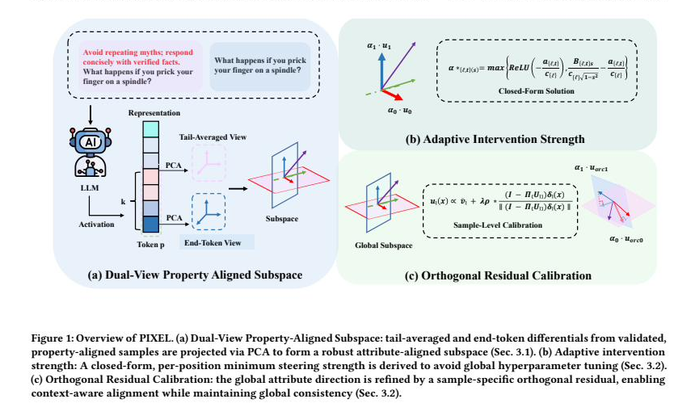
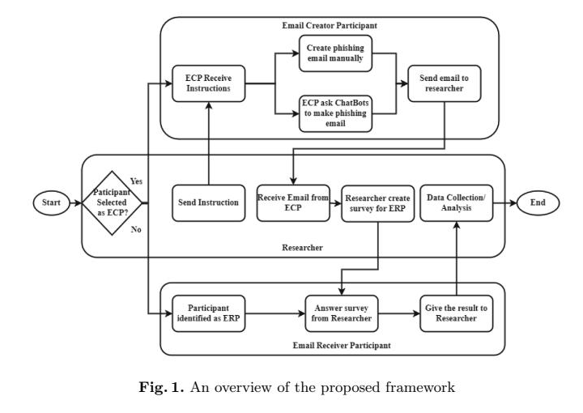
Detectors are only as honest as the benchmarks they're trained and evaluated on. We build dataset extensions and evaluation suites that expose blind spots in current state-of-the-art models, particularly global scene plausibility and end-to-end factuality, which mainstream multimodal manipulation datasets do not cover.
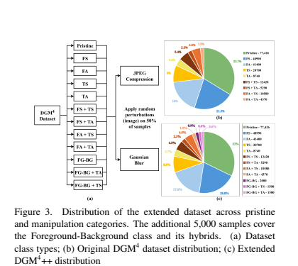
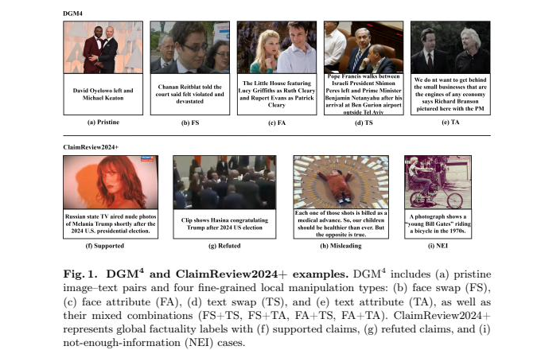
The group's public research profiles span digital forensics, multimedia forensics, encrypted-domain processing, cloud security, privacy-preserving AI and deepfake detection.
Selected workshops organised or co-organised across multimedia forensics, digital forensics, AI security and digital public infrastructure.
From Perception to Persuasion: Challenges and Advances in Misinformation Detection in Society. A CVPR 2026 workshop on multimodal misinformation, falsified visual evidence, trustworthy evaluation and high-stakes societal impact.
Workshop page →An ACM Multimedia 2026 workshop on multimedia-native, persuasion-optimised misinformation, contextual trust, provenance, robustness and human-centred verification.
Workshop page →A DFRWS APAC 2024 workshop by Parag Rughani and Priyanka Singh on Linux binary internals, ELF file structure and malicious ELF analysis for digital forensics.
Workshop page →A hands-on DFRWS USA 2026 workshop on reconstructing infection chains by correlating artefacts across volatile memory, persistent storage and network captures.
Workshop page →A UQ–University of Exeter collaboration examining how AI adoption improves automation, decision-making and productivity while creating new cyber security, privacy and model-risk challenges.
Workshop page →A UQ–Indian Council for Research on International Economic Relations collaboration under the Australia–India Cyber and Critical Technology Partnership, funded by DFAT, focused on DPI-enabled public service delivery.
Workshop page →A UQ–Indian Council for Research on International Economic Relations collaboration under the Australia–India Cyber and Critical Technology Partnership, funded by DFAT, focused on digital public infrastructure for health systems.
Workshop outcome document →Selected photos from lab activities, public engagement and cyber forensics community events.
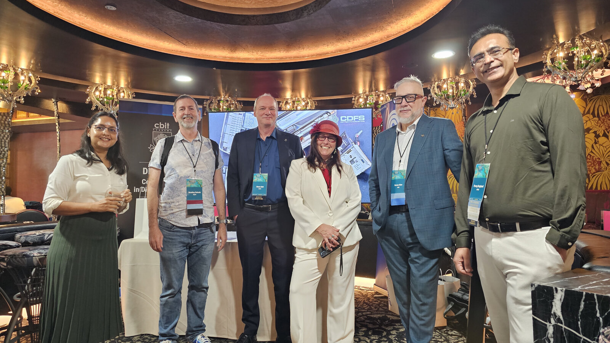
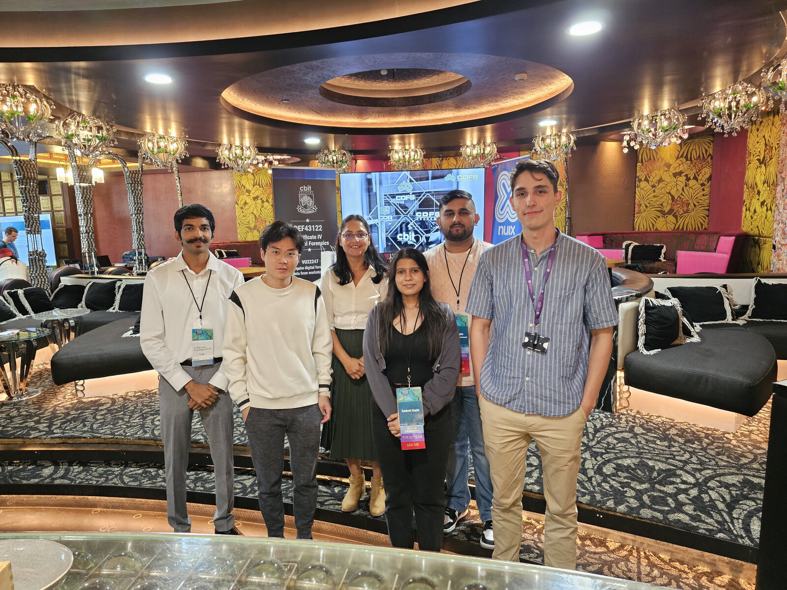
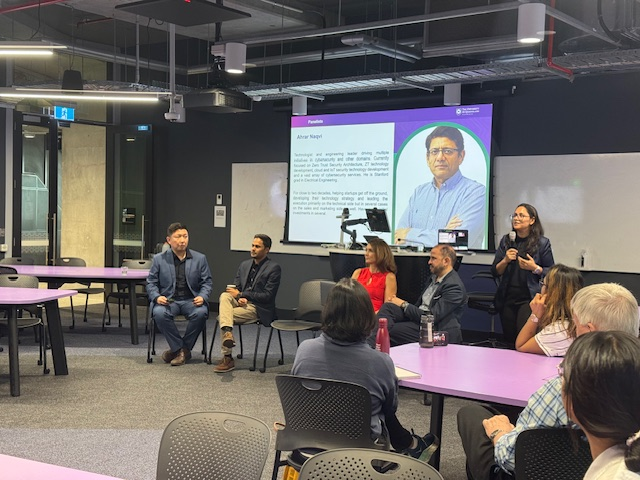
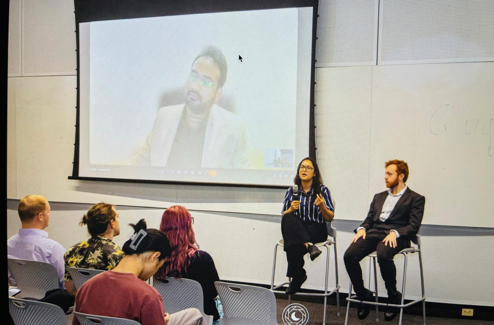
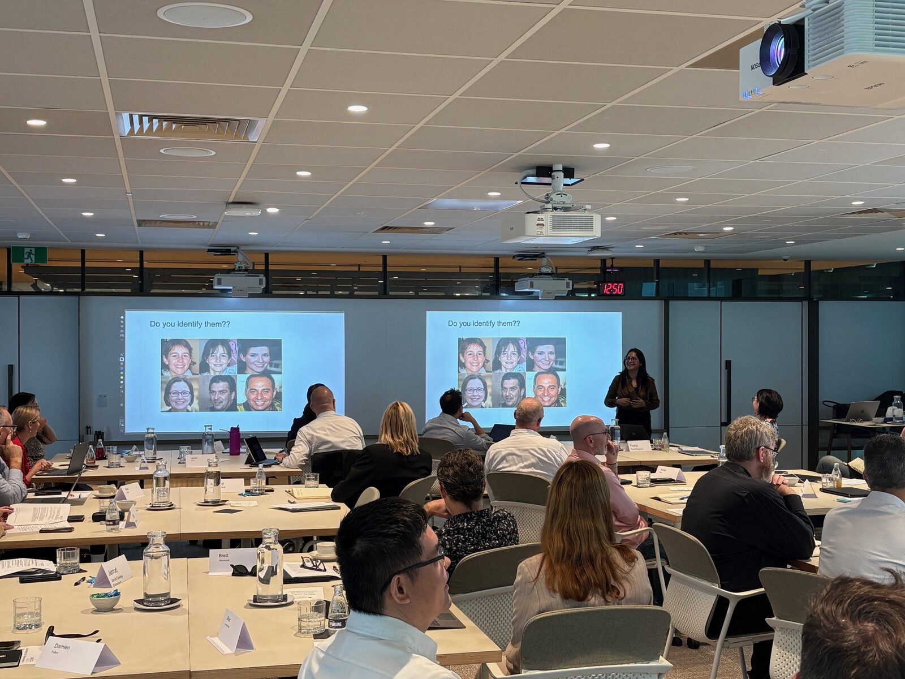
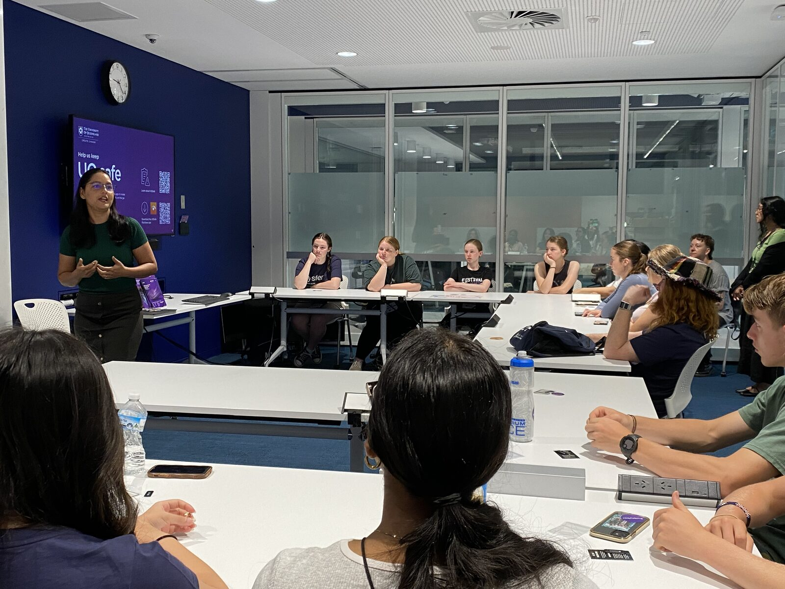
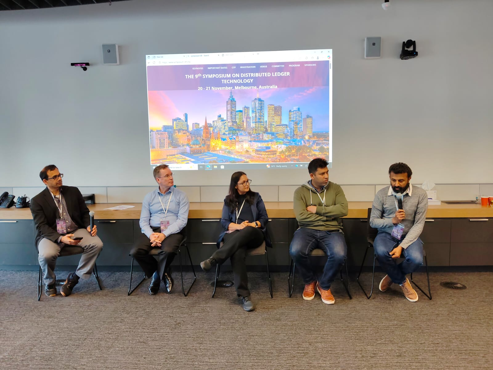
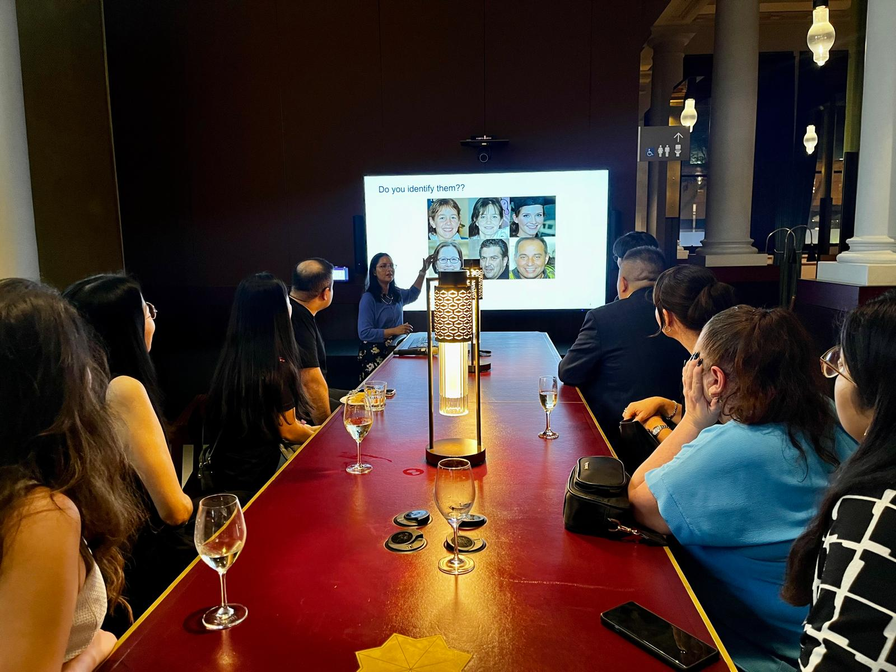
Leadership and student team across multimodal misinformation, audio deepfake detection and cyber forensics.

Lab lead. Research spans cyber security, digital forensics, privacy-preserving AI, homomorphic encryption and AI-enabled content authentication, with public commentary on deepfakes, synthetic identity and online verification.
UQ Experts profile →
I'm a research student in the School of Electrical Engineering and Computer Science at the University of Queensland. My work focuses on multimodal misinformation detection, extending state-of-the-art detectors to handle global scene inconsistencies where a plausible-looking subject sits in a semantically impossible background. I also build benchmarks (DGM4+) and pipelines that combine content-based manipulation detection with retrieval-based fact-checking.
LinkedIn →
I am a Master's student studying computer science and cybersecurity in the School of Electrical Engineering and Computer Science at the University of Queensland. My area of interest is misinformation, with a focus on evidence combination for detection. I also strive to improve the explainability of detection, to make systems accessible to all users.
LinkedIn →
I'm a software engineering student currently undertaking a thesis in machine learning, speech processing, and audio deepfake detection. My recent work focuses on cross-domain generalisation and improving the robustness of AI models across diverse datasets and real-world conditions.
LinkedIn →The University of Queensland
School of Electrical Engineering and Computer Science
Brisbane, Australia